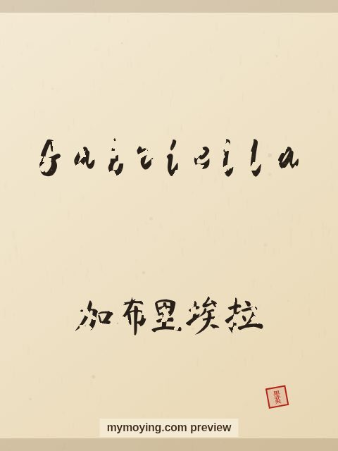

Gabriella in Chinese Calligraphy
Curious how Gabriella looks in Chinese brush calligraphy? This page shows the name, its Chinese transliteration 加布里埃拉 (Jiā bù lǐ āi lā), and the story behind it.

Sample. “Gabriella” in the Regular (楷书) brush style with the Chinese name 加布里埃拉 (Jiā bù lǐ āi lā). The paid file removes the watermark.
The Chinese characters for Gabriella
As a transliteration, Gabriella is usually written 加布里埃拉 (Jiā bù lǐ āi lā). Each character is listed below with its own dictionary meaning — the name is chosen by sound, not by meaning, and Moying does not translate names. Please have a person review the characters before any permanent use such as a tattoo.
Origin and meaning
With Hebrew origins, Gabriella is usually read as “God is my strength (feminine of Gabriel)”.
About the name Gabriella
The feminine of Gabriel, popular across Italy and Latin America.
As a gift or a tattoo
The name Gabriella suits a framed gift, and the clean high-resolution file also works as a tattoo design.
Open Gabriella in the generatorFree watermarked preview. $1.99 once for a clean high-resolution download of this name in every style and setting. No subscription. Digital product, delivered instantly; see Terms.